Les nombres réels
Ordre et encadrements, topologie de \(\mathbb R\) (intervalles, majorants, bornes sup/inf), valeur absolue et inégalité triangulaire, partie entière, et résolution de systèmes linéaires simples.
1. Résumé de cours détaillé
1.1 Relation d'ordre et inégalités
- On additionne deux inégalités de même sens : \(a\leqslant b,\ c\leqslant d\Rightarrow a+c\leqslant b+d\).
- On multiplie par \(c\geqslant 0\) (sens conservé) ou \(c\leqslant 0\) (sens inversé).
- \(0\leqslant a\leqslant b,\ 0\leqslant c\leqslant d\Rightarrow 0\leqslant ac\leqslant bd\).
- \(0
1.2 Topologie réelle : intervalles, bornes
1.3 Valeur absolue
1.4 Partie entière
1.5 Systèmes linéaires
2. Exercices d'entraînement (créés) avec corrections
1) Encadrement optimal
On étudie les variations de \(g(x)=\dfrac{2x-1}{x+1}\) sur \([2,3]\).
Étape 1 : dérivée
\[ g'(x)=\frac{2(x+1)-(2x-1)}{(x+1)^2}=\frac{3}{(x+1)^2}>0 \]\(g\) est strictement croissante sur \([2,3]\).
Étape 2 : valeurs aux bornes
Une fonction croissante atteint son minimum à gauche et son maximum à droite :
\[ g(2)=\frac{3}{3}=1 \qquad g(3)=\frac{5}{4} \]1) Résolution
On raisonne par disjonction de cas, selon la position de \(x\) par rapport à 1 et 3.
Étape 1 : cas \(x<1\)
\(|x-1|=1-x\) et \(|x-3|=3-x\).
\[ (1-x)+(3-x)=4 \iff 4-2x=4 \iff x=0 \]\(0<1\) : solution valable.
Étape 2 : cas \(1\leqslant x\leqslant 3\)
\(|x-1|=x-1\) et \(|x-3|=3-x\).
\[ (x-1)+(3-x)=2 \]La somme vaut toujours 2, jamais 4 : pas de solution.
Étape 3 : cas \(x>3\)
\(|x-1|=x-1\) et \(|x-3|=x-3\).
\[ 2x-4=4 \iff x=4 \]\(4>3\) : solution valable.
Lecture géométrique : la somme des distances de \(x\) à 1 et à 3 vaut 4.
1) Bornes de \(A\)
Étape 1 : réécrire le terme général
\[ u_n=\frac{n}{n+1}=1-\frac{1}{n+1} \]\(\dfrac{1}{n+1}\) décroît, donc \(u_n\) croît ; et \(u_n<1\) pour tout \(n\).
Étape 2 : minimum
Le plus petit terme est le premier : \(u_0=0\). Il appartient à \(A\).
Étape 3 : borne supérieure
- 1 majore \(A\), car \(u_n<1\).
- Soit \(\varepsilon>0\) : \(u_n>1-\varepsilon\iff\dfrac{1}{n+1}<\varepsilon\), ce qui est vrai pour \(n\) assez grand.
Donc \(\sup A=1\). Comme \(u_n<1\) toujours, 1 n'est pas atteint.
3. Correction intégrale du TD n°4 — Les nombres réels
Feuille sans corrigé officiel : les 15 exercices sont résolus intégralement, chaque sous-question traitée.
Partie 1 — Encadrer des expressions
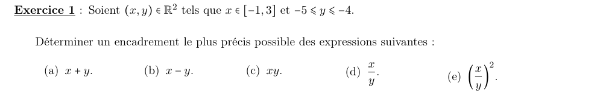
a) \(x+y\)
Étape 1 : additionner
\[ -1+(-5)\leqslant x+y\leqslant 3+(-4) \]b) \(x-y\)
Étape 1 : encadrer \(-y\)
Multiplier par \(-1\) renverse : \(4\leqslant -y\leqslant 5\).
Étape 2 : additionner
\[ -1+4\leqslant x-y\leqslant 3+5 \]c) \(xy\)
Étape 1 : les quatre produits des bornes
\[ (-1)(-5)=5,\quad (-1)(-4)=4,\quad 3\times(-5)=-15,\quad 3\times(-4)=-12 \]Étape 2 : garder le plus petit et le plus grand
d) \(\dfrac xy\)
Étape 1 : encadrer \(\dfrac1y\)
La fonction inverse est décroissante sur \(]-\infty,0[\) : \(-\dfrac14\leqslant\dfrac1y\leqslant-\dfrac15\).
Étape 2 : les quatre produits \(x\times\dfrac1y\)
\[ (-1)\left(-\tfrac14\right)=\tfrac14,\quad (-1)\left(-\tfrac15\right)=\tfrac15,\quad 3\left(-\tfrac14\right)=-\tfrac34,\quad 3\left(-\tfrac15\right)=-\tfrac35 \]e) \(\left(\dfrac xy\right)^2\)
Étape 1 : l'intervalle contient 0
\(\dfrac xy\in\left[-\tfrac34,\tfrac14\right]\) contient 0 : le carré descend jusqu'à 0.
Étape 2 : le maximum
Le carré est maximal pour la valeur de plus grande valeur absolue, \(-\tfrac34\).
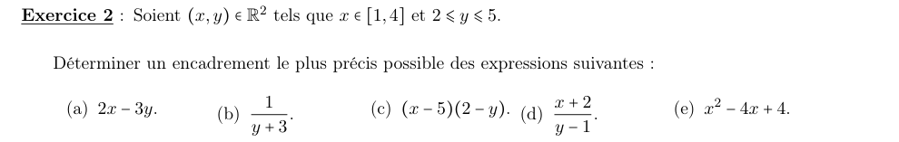
a) \(2x-3y\)
Étape 1 : encadrer chaque terme
\[ 2\leqslant 2x\leqslant 8 \qquad -15\leqslant -3y\leqslant -6 \]Étape 2 : additionner
b) \(\dfrac1y+3\)
Étape 1 : encadrer \(\dfrac1y\)
L'inverse est décroissant sur \(]0,+\infty[\) : \(\dfrac15\leqslant\dfrac1y\leqslant\dfrac12\).
Étape 2 : ajouter 3
c) \((x-5)(2-y)\)
Étape 1 : encadrer chaque facteur
\[ -4\leqslant x-5\leqslant -1 \qquad -3\leqslant 2-y\leqslant 0 \]Étape 2 : produit de deux négatifs
Les deux facteurs sont négatifs : le produit est positif. Il vaut 0 pour \(y=2\), et au plus \((-4)(-3)=12\).
d) \(\dfrac{x+2}{y-1}\)
Étape 1 : encadrer chaque morceau
\[ 3\leqslant x+2\leqslant 6 \qquad \frac14\leqslant\frac{1}{y-1}\leqslant 1 \]Étape 2 : multiplier (tout est positif)
e) \(x^2-4x+4\)
Étape 1 : reconnaître un carré
\[ x^2-4x+4=(x-2)^2 \qquad -1\leqslant x-2\leqslant 2 \]Étape 2 : carré d'un intervalle contenant 0
Le minimum est 0 (en \(x=2\)), le maximum \(2^2=4\) (en \(x=4\)).
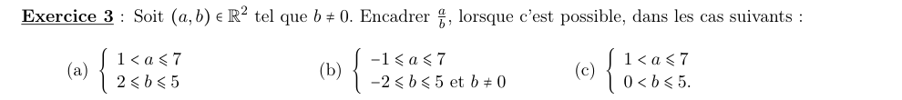
a) \(1<a\leqslant7,\ 2\leqslant b\leqslant5\)
Étape 1 : encadrer \(\dfrac1b\)
\(b>0\) : \(\dfrac15\leqslant\dfrac1b\leqslant\dfrac12\).
Étape 2 : multiplier (tout est positif)
Le minimum \(\tfrac15\) demanderait \(a=1\), exclu : l'inégalité de gauche est stricte. Le maximum \(\tfrac72\) est atteint pour \(a=7\), \(b=2\).
b) \(-1\leqslant a\leqslant7,\ -2\leqslant b\leqslant5,\ b\neq0\)
Étape 1 : \(b\) peut être proche de 0
Avec \(a=7\) et \(b=\tfrac1n\), \(\dfrac ab=7n\) devient aussi grand qu'on veut ; avec \(b=-\tfrac1n\), \(-7n\) aussi petit qu'on veut.
c) \(1<a\leqslant7,\ 0<b\leqslant5\)
Étape 1 : pas de majorant
Quand \(b\to 0^+\), \(\dfrac ab\to+\infty\).
Étape 2 : un minorant
\(a>1\) et \(\dfrac1b\geqslant\dfrac15\), donc \(\dfrac ab>\dfrac15\).
Partie 2 — (In)équations avec racines
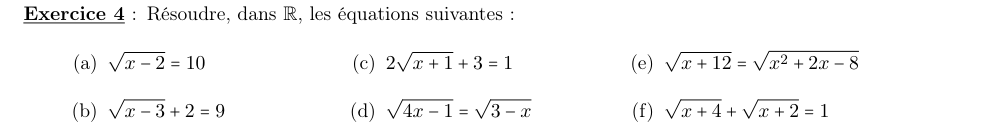
a) \(\sqrt{x-2}=10\)
Étape 1 : élever au carré
\(10\geqslant 0\), donc \(x-2=100\).
b) \(\sqrt{x-3}+2=9\)
Étape 1 : isoler la racine
\[ \sqrt{x-3}=7 \]Étape 2 : élever au carré
\[ x-3=49 \]c) \(2\sqrt{x+1}+3=1\)
Étape 1 : isoler la racine
\[ \sqrt{x+1}=-1 \]Une racine carrée est toujours positive.
d) \(\sqrt{4x-1}=\sqrt{3-x}\)
Étape 1 : domaine
\(4x-1\geqslant 0\) et \(3-x\geqslant 0\) : \(\tfrac14\leqslant x\leqslant 3\).
Étape 2 : élever au carré
\[ 4x-1=3-x \iff x=\frac45 \]\(\tfrac45\) est dans le domaine.
e) \(\sqrt{x+12}=\sqrt{x^2+2x-8}\)
Étape 1 : élever au carré
\[ x+12=x^2+2x-8 \iff x^2+x-20=0 \iff (x+5)(x-4)=0 \]Étape 2 : vérifier les candidats
- \(x=-5\) : \(x+12=7\) et \(25-10-8=7\). Valable.
- \(x=4\) : \(x+12=16\) et \(16+8-8=16\). Valable.
f) \(\sqrt{x+4}+\sqrt{x+2}=1\)
Étape 1 : domaine
\(x\geqslant -2\).
Étape 2 : isoler une racine
\(\sqrt{x+4}=1-\sqrt{x+2}\) ; il faut \(1-\sqrt{x+2}\geqslant 0\).
Étape 3 : élever au carré
\[ x+4=1-2\sqrt{x+2}+x+2 \iff \sqrt{x+2}=-\frac12 \]Impossible : une racine est positive.
Plus rapide : pour \(x\geqslant-2\), \(\sqrt{x+4}\geqslant\sqrt2>1\), donc la somme dépasse toujours 1.
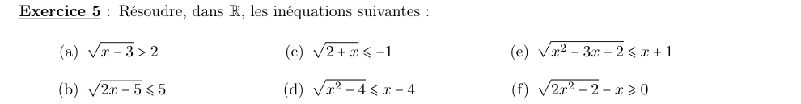
a) \(\sqrt{x-3}>2\)
Étape 1 : domaine
\(x\geqslant 3\).
Étape 2 : élever au carré (deux membres positifs)
\[ x-3>4 \iff x>7 \]b) \(\sqrt{2x-5}\leqslant5\)
Étape 1 : domaine
\(x\geqslant\tfrac52\).
Étape 2 : élever au carré
\[ 2x-5\leqslant 25 \iff x\leqslant 15 \]c) \(\sqrt{2+x}\leqslant-1\)
Étape 1 : signe
Une racine est positive, donc jamais inférieure à \(-1\).
d) \(\sqrt{x^2-4}\leqslant x-4\)
Étape 1 : conditions
Domaine : \(x^2\geqslant 4\). Et le membre de droite doit être positif : \(x\geqslant 4\).
Étape 2 : élever au carré
\[ x^2-4\leqslant x^2-8x+16 \iff 8x\leqslant 20 \iff x\leqslant\frac52 \]Étape 3 : confronter
\(x\leqslant\tfrac52\) et \(x\geqslant 4\) sont incompatibles.
e) \(\sqrt{x^2-3x+2}\leqslant x+1\)
Étape 1 : domaine
\(x^2-3x+2=(x-1)(x-2)\geqslant 0\) : \(x\leqslant 1\) ou \(x\geqslant 2\).
Étape 2 : membre de droite positif
\(x+1\geqslant 0\) : \(x\geqslant -1\).
Étape 3 : élever au carré
\[ x^2-3x+2\leqslant x^2+2x+1 \iff 5x\geqslant 1 \iff x\geqslant\frac15 \]Étape 4 : intersection des conditions
f) \(\sqrt{2x^2-2}-x\geqslant0\)
Étape 1 : domaine
\(2x^2-2\geqslant 0\iff x^2\geqslant 1\) : \(x\leqslant -1\) ou \(x\geqslant 1\). On résout \(\sqrt{2x^2-2}\geqslant x\).
Étape 2 : cas \(x\leqslant -1\)
Le membre de droite est négatif, la racine est positive : toujours vrai.
Étape 3 : cas \(x\geqslant 1\)
Les deux membres sont positifs, on élève au carré :
\[ 2x^2-2\geqslant x^2 \iff x^2\geqslant 2 \iff x\geqslant\sqrt2 \]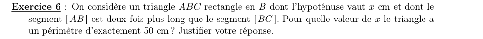
1) Valeur de \(x\)
Étape 1 : exprimer les côtés en fonction de \(x\)
On pose \(BC=a\), donc \(AB=2a\).
Étape 2 : écrire le périmètre
\[ AB+BC+AC=3a+x=\frac{3x}{\sqrt5}+x=x\,\frac{5+3\sqrt5}{5} \]Étape 3 : résoudre
\[ x\,\frac{5+3\sqrt5}{5}=50 \iff x=\frac{250}{5+3\sqrt5} \]Étape 4 : rationaliser
On multiplie en haut et en bas par la quantité conjuguée \(3\sqrt5-5\) :
\[ x=\frac{250\,(3\sqrt5-5)}{45-25}=\frac{25\,(3\sqrt5-5)}{2} \]Partie 3 — Valeur absolue et partie entière
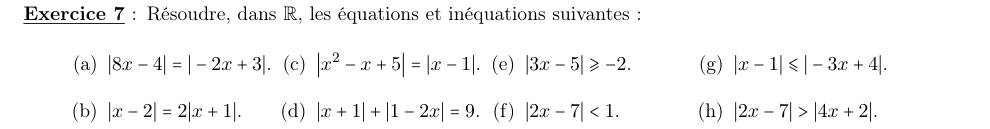
a) \(|8x-4|=|-2x+3|\)
Étape 1 : les deux cas
- \(8x-4=-2x+3\iff 10x=7\iff x=\tfrac{7}{10}\)
- \(8x-4=2x-3\iff 6x=1\iff x=\tfrac16\)
b) \(|x-2|=2|x+1|\)
Étape 1 : les deux cas (\(2|x+1|=|2x+2|\))
- \(x-2=2x+2\iff x=-4\)
- \(x-2=-2x-2\iff x=0\)
c) \(|x^2-x+5|=|x-1|\)
Étape 1 : les deux cas
- \(x^2-x+5=x-1\iff x^2-2x+6=0\) : \(\Delta=4-24<0\).
- \(x^2-x+5=-x+1\iff x^2+4=0\) : impossible.
d) \(|x+1|+|1-2x|=9\)
Étape 1 : repérer les points de changement
\(x+1\) change de signe en \(-1\), \(1-2x\) en \(\tfrac12\). On raisonne par disjonction de cas.
Étape 2 : cas \(x<-1\)
\[ -(x+1)+(1-2x)=-3x=9 \iff x=-3 \quad(\text{valable}) \]Étape 3 : cas \(-1\leqslant x\leqslant\tfrac12\)
\[ (x+1)+(1-2x)=2-x=9 \iff x=-7 \quad(\text{hors du cas, rejeté}) \]Étape 4 : cas \(x>\tfrac12\)
\[ (x+1)+(2x-1)=3x=9 \iff x=3 \quad(\text{valable}) \]e) \(|3x-5|\geqslant-2\)
Étape 1 : signe
Une valeur absolue est toujours positive, donc supérieure à \(-2\).
f) \(|2x-7|<1\)
Étape 1 : traduire
\[ -1<2x-7<1 \iff 6<2x<8 \iff 3<x<4 \]g) \(|x-1|\leqslant|-3x+4|\)
Étape 1 : élever au carré (deux membres positifs)
\[ (x-1)^2\leqslant(3x-4)^2 \iff (3x-4)^2-(x-1)^2\geqslant 0 \]Étape 2 : factoriser \(A^2-B^2\)
\[ (3x-4-x+1)(3x-4+x-1)=(2x-3)(4x-5)\geqslant 0 \]Étape 3 : signe du produit
Racines \(\tfrac54\) et \(\tfrac32\) ; le produit est positif à l'extérieur des racines.
h) \(|2x-7|>|4x+2|\)
Étape 1 : élever au carré
\[ (2x-7)^2-(4x+2)^2>0 \]Étape 2 : factoriser
\[ (2x-7-4x-2)(2x-7+4x+2)=-(2x+9)(6x-5)>0 \iff (2x+9)(6x-5)<0 \]Étape 3 : signe
Négatif entre les racines \(-\tfrac92\) et \(\tfrac56\).
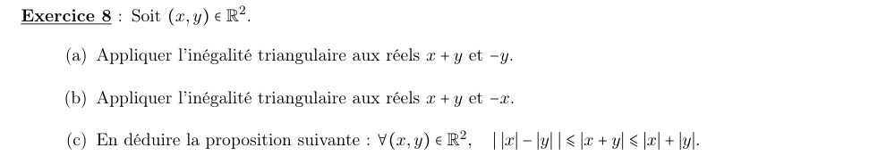
a) Inégalité triangulaire pour \(x+y\) et \(-y\)
Étape 1 : appliquer avec \(a=x+y\), \(b=-y\)
\[ \big|(x+y)+(-y)\big|\leqslant|x+y|+|-y| \iff |x|\leqslant|x+y|+|y| \]b) Pour \(x+y\) et \(-x\)
Étape 1 : appliquer avec \(a=x+y\), \(b=-x\)
\[ \big|(x+y)+(-x)\big|\leqslant|x+y|+|-x| \iff |y|\leqslant|x+y|+|x| \]c) Conclusion
Étape 1 : rassembler a) et b)
\(|x|-|y|\) et son opposé sont tous deux inférieurs à \(|x+y|\). Or \(\big|\,|x|-|y|\,\big|\) est l'un des deux.
Étape 2 : ajouter l'inégalité usuelle
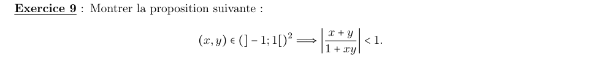
1) Démonstration
On se ramène à une inégalité entre carrés.
Étape 1 : signe du dénominateur
\(|x|<1\) et \(|y|<1\) donnent \(|xy|<1\), donc \(1+xy>0\).
Étape 2 : se ramener aux carrés
Le dénominateur étant positif, l'inégalité équivaut à \(|x+y|<1+xy\). Les deux membres sont positifs :
\[ |x+y|<1+xy \iff (x+y)^2<(1+xy)^2 \]Étape 3 : calculer la différence
\[ (1+xy)^2-(x+y)^2=1+x^2y^2-x^2-y^2=(1-x^2)(1-y^2) \]Étape 4 : signe
\(x^2<1\) et \(y^2<1\) : les deux facteurs sont strictement positifs.
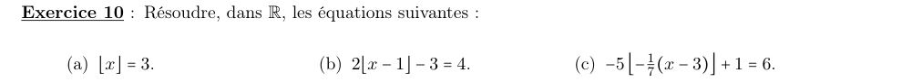
a) \(\lfloor x\rfloor=3\)
Étape 1 : appliquer la définition
\[ 3\leqslant x<4 \]b) \(2\lfloor x-1\rfloor-3=4\)
Étape 1 : isoler la partie entière
\[ \lfloor x-1\rfloor=\frac72 \]Une partie entière est un entier : impossible.
c) \(-5\left\lfloor-\tfrac17(x-3)\right\rfloor+1=6\)
Étape 1 : isoler la partie entière
\[ \left\lfloor-\frac{x-3}{7}\right\rfloor=-1 \]Étape 2 : appliquer la définition
\[ -1\leqslant-\frac{x-3}{7}<0 \]Étape 3 : multiplier par \(-7\) (le sens change)
\[ 0<x-3\leqslant 7 \iff 3<x\leqslant 10 \]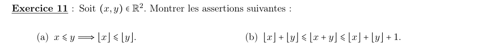
a) \(x\leqslant y\Rightarrow\lfloor x\rfloor\leqslant\lfloor y\rfloor\)
Étape 1 : \(\lfloor x\rfloor\) est un entier inférieur à \(y\)
\[ \lfloor x\rfloor\leqslant x\leqslant y \]Étape 2 : utiliser la maximalité
\(\lfloor y\rfloor\) est le plus grand entier sous \(y\), donc il dépasse l'entier \(\lfloor x\rfloor\).
b) \(\lfloor x\rfloor+\lfloor y\rfloor\leqslant\lfloor x+y\rfloor\leqslant\lfloor x\rfloor+\lfloor y\rfloor+1\)
Étape 1 : séparer partie entière et partie fractionnaire
On écrit \(x=\lfloor x\rfloor+\{x\}\) et \(y=\lfloor y\rfloor+\{y\}\), avec \(0\leqslant\{x\},\{y\}<1\).
\[ x+y=\big(\lfloor x\rfloor+\lfloor y\rfloor\big)+\big(\{x\}+\{y\}\big),\qquad 0\leqslant\{x\}+\{y\}<2 \]Étape 2 : sortir l'entier de la partie entière
Étape 3 : le dernier terme vaut 0 ou 1
Car \(0\leqslant\{x\}+\{y\}<2\).
Partie 4 — Topologie réelle
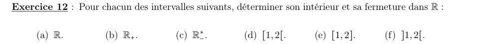
1) Intérieur et fermeture des six intervalles
Étape 1 : repérer les extrémités
- \(\mathbb R\) : \(-\infty\) et \(+\infty\).
- \(\mathbb R_+\) : \(0\) et \(+\infty\) ; \(\mathbb R_-^*\) : \(-\infty\) et \(0\).
- Les trois autres : \(1\) et \(2\).
Étape 2 : appliquer la règle
| \(I\) | Intérieur \(\mathring I\) | Fermeture \(\overline I\) |
|---|---|---|
| \(\mathbb R\) | \(\mathbb R\) | \([-\infty,+\infty]\) |
| \(\mathbb R_+=[0,+\infty[\) | \(]0,+\infty[\) | \([0,+\infty]\) |
| \(\mathbb R_-^*=\,]-\infty,0[\) | \(]-\infty,0[\) | \([-\infty,0]\) |
| \([1,2[\) | \(]1,2[\) | \([1,2]\) |
| \([1,2]\) | \(]1,2[\) | \([1,2]\) |
| \(]1,2[\) | \(]1,2[\) | \([1,2]\) |
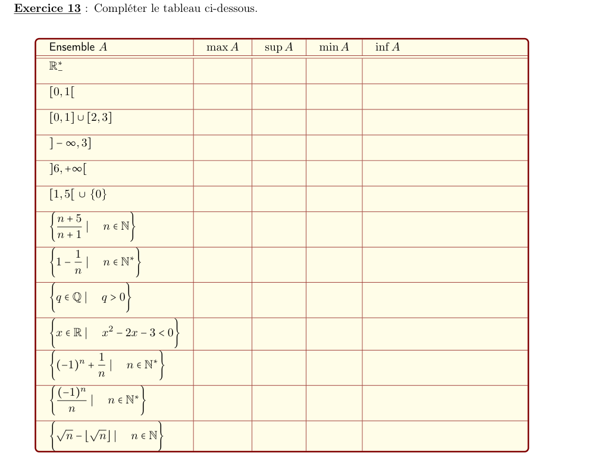
1) Bornes des treize ensembles
Étape 1 : les intervalles et réunions d'intervalles
On lit les extrémités ; un crochet fermé donne un max ou un min.
- \(]-\infty,0[\) : sup 0 non atteint, inf \(-\infty\).
- \([0,1[\) : min 0, sup 1 non atteint.
- \([0,1]\cup[2,3]\) : min 0, max 3.
- \(]-\infty,3]\) : max 3, inf \(-\infty\).
- \(]6,+\infty[\) : inf 6 non atteint, sup \(+\infty\).
- \([1,5[\cup\{0\}\) : min 0, sup 5 non atteint.
- \(x^2-2x-3=(x+1)(x-3)<0\iff x\in\,]-1,3[\) : inf \(-1\), sup 3, non atteints.
Étape 2 : les ensembles définis par une suite
- \(\dfrac{n+5}{n+1}=1+\dfrac{4}{n+1}\) décroît de 5 (\(n=0\)) vers 1 sans l'atteindre : max 5, inf 1.
- \(1-\dfrac1n\) croît de 0 (\(n=1\)) vers 1 sans l'atteindre : min 0, sup 1.
- \((-1)^n+\dfrac1n\) : pour \(n\) pair, \(1+\tfrac1n\) décroît depuis \(\tfrac32\) (\(n=2\)) ; pour \(n\) impair, \(-1+\tfrac1n\) décroît vers \(-1\) sans l'atteindre. Max \(\tfrac32\), inf \(-1\).
- \(\dfrac{(-1)^n}{n}\) : termes \(-1,\ \tfrac12,\ -\tfrac13,\ \tfrac14,\dots\) Max \(\tfrac12\) (\(n=2\)), min \(-1\) (\(n=1\)).
Étape 3 : les deux derniers
- Rationnels strictement positifs : non majorés (sup \(+\infty\)) ; \(\tfrac1n\to 0\) donc inf 0, non atteint.
- \(\sqrt n-\lfloor\sqrt n\rfloor\) est dans \([0,1[\) ; il vaut 0 pour les carrés parfaits ; pour \(n=k^2-1\), il vaut \(\sqrt{k^2-1}-(k-1)\), qui tend vers 1. Min 0, sup 1 non atteint.
Étape 4 : tableau récapitulatif
| Ensemble \(A\) | \(\max A\) | \(\sup A\) | \(\min A\) | \(\inf A\) |
|---|---|---|---|---|
| \(\mathbb R_-^*=\,]-\infty,0[\) | — | \(0\) | — | \(-\infty\) |
| \([0,1[\) | — | \(1\) | \(0\) | \(0\) |
| \([0,1]\cup[2,3]\) | \(3\) | \(3\) | \(0\) | \(0\) |
| \(]-\infty,3]\) | \(3\) | \(3\) | — | \(-\infty\) |
| \(]6,+\infty[\) | — | \(+\infty\) | — | \(6\) |
| \([1,5[\cup\{0\}\) | — | \(5\) | \(0\) | \(0\) |
| \(\left\{\tfrac{n+5}{n+1}\mid n\in\mathbb N\right\}\) | \(5\) | \(5\) | — | \(1\) |
| \(\left\{1-\tfrac1n\mid n\in\mathbb N^*\right\}\) | — | \(1\) | \(0\) | \(0\) |
| \(\{q\in\mathbb Q\mid q>0\}\) | — | \(+\infty\) | — | \(0\) |
| \(\{x\mid x^2-2x-3<0\}=\,]-1,3[\) | — | \(3\) | — | \(-1\) |
| \(\left\{(-1)^n+\tfrac1n\mid n\in\mathbb N^*\right\}\) | \(\tfrac32\) | \(\tfrac32\) | — | \(-1\) |
| \(\left\{\tfrac{(-1)^n}{n}\mid n\in\mathbb N^*\right\}\) | \(\tfrac12\) | \(\tfrac12\) | \(-1\) | \(-1\) |
| \(\{\sqrt n-\lfloor\sqrt n\rfloor\mid n\in\mathbb N\}\) | — | \(1\) | \(0\) | \(0\) |
Partie 5 — Systèmes linéaires
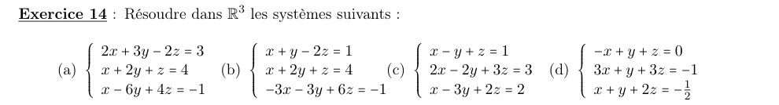
a) \(2x+3y-2z=3\ ;\ x+2y+z=4\ ;\ x-6y+4z=-1\)
Étape 1 : exprimer \(x\) avec \(L_2\)
\[ x=4-2y-z \]Étape 2 : remplacer dans \(L_1\) et \(L_3\)
\[ L_1:\ 8-4y-2z+3y-2z=3 \iff y+4z=5 \] \[ L_3:\ 4-2y-z-6y+4z=-1 \iff 8y-3z=5 \]Étape 3 : résoudre le système \(2\times 2\)
\(y=5-4z\), donc \(40-32z-3z=5\), soit \(z=1\), puis \(y=1\), puis \(x=4-2-1=1\).
Étape 4 : vérifier
\(2+3-2=3\) ; \(1+2+1=4\) ; \(1-6+4=-1\).
b) \(x+y-2z=1\ ;\ x+2y+z=4\ ;\ -3x-3y+6z=-1\)
Étape 1 : comparer \(L_3\) et \(L_1\)
Le membre de gauche de \(L_3\) vaut \(-3\) fois celui de \(L_1\) : \(L_3\) impose \(-3\times 1=-1\).
c) \(x-y+z=1\ ;\ 2x-2y+3z=3\ ;\ x-3y+2z=2\)
Étape 1 : éliminer \(x\)
\[ L_2-2L_1:\ z=1 \qquad L_3-L_1:\ -2y+z=1 \]Étape 2 : remonter
\(z=1\), puis \(-2y=0\) donc \(y=0\), puis \(x=1+y-z=0\).
d) \(-x+y+z=0\ ;\ 3x+y+3z=-1\ ;\ x+y+2z=-\tfrac12\)
Étape 1 : exprimer \(y\) avec \(L_1\)
\[ y=x-z \]Étape 2 : remplacer
\[ L_2:\ 4x+2z=-1 \qquad L_3:\ 2x+z=-\tfrac12 \]\(L_2\) est le double de \(L_3\) : une seule équation utile. Le système a une infinité de solutions.
Étape 3 : paramétrer
On pose \(x=t\). Alors \(z=-\tfrac12-2t\) et \(y=x-z=3t+\tfrac12\).
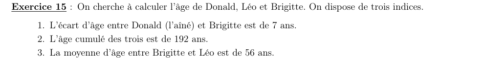
1) Âges des trois personnes
Étape 1 : utiliser (3)
\[ B+L=112 \]Étape 2 : remplacer dans (2)
\[ D+112=192 \iff D=80 \]Étape 3 : utiliser (1), puis (3)
\[ B=D-7=73 \qquad L=112-73=39 \]Étape 4 : vérifier
\(80+39+73=192\) et \(\tfrac{73+39}{2}=56\).
Chapitre 4 du cours M01 (S1). Sources : Chap_4.pdf (cours magistral) et TD04 — Les nombres réels. Corrigé rédigé intégralement (pas de corrigé officiel fourni).
📂 Documents donnés
Tous les documents originaux liés à ce chapitre (cours magistral, TD, corrigés…). Cliquez pour ouvrir le PDF.
Cours (CM)
TD (énoncé)
Les documents sont inclus dans ce dossier (sous-dossier documents\) — le paquet est autonome et partageable tel quel.